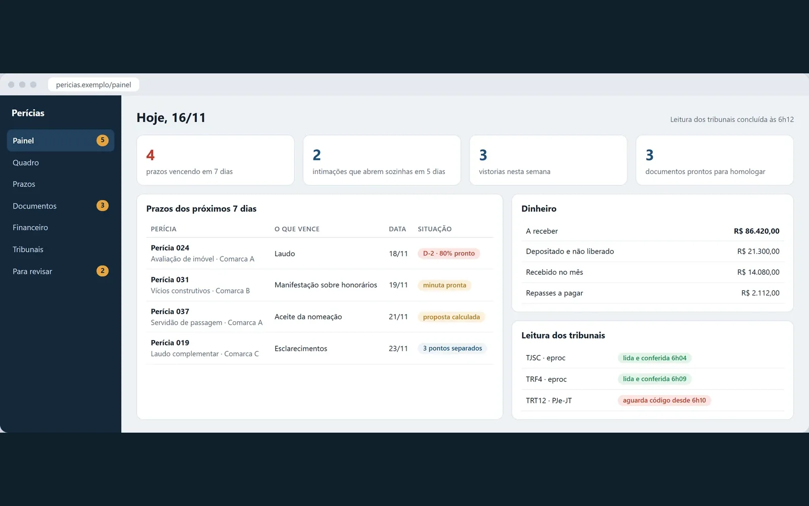
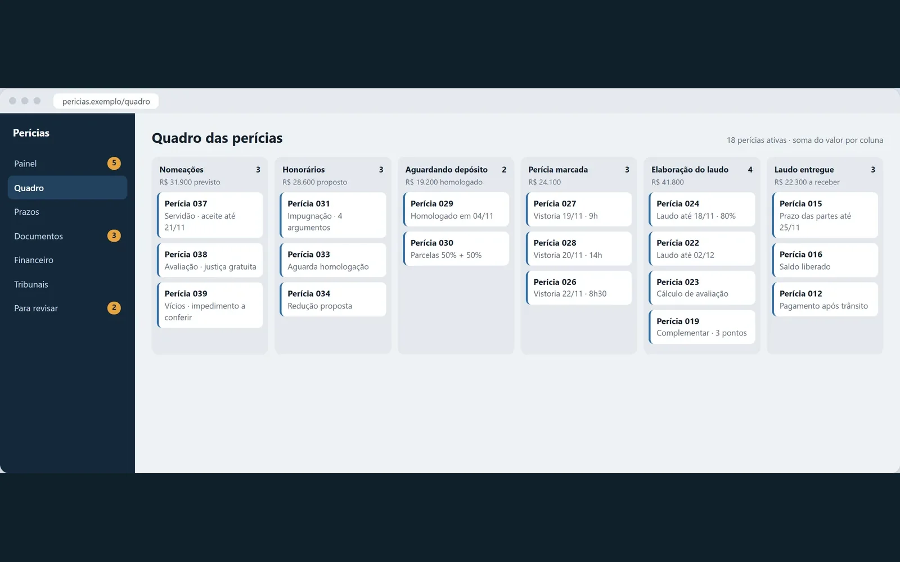
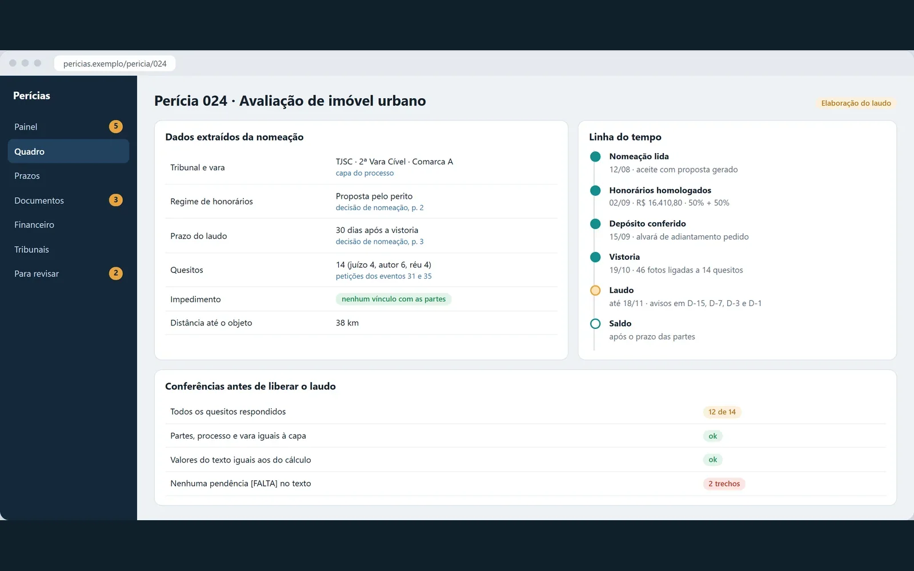
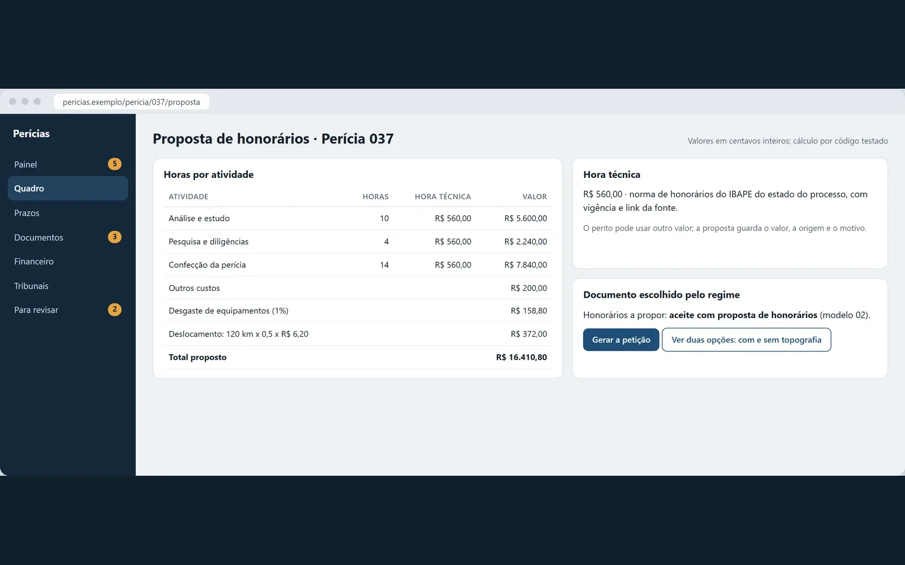
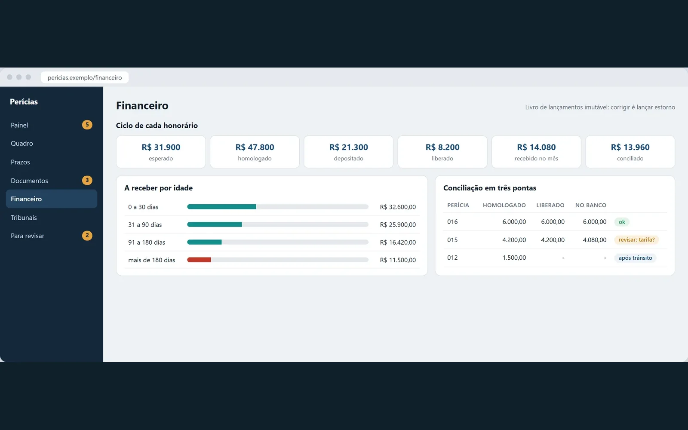
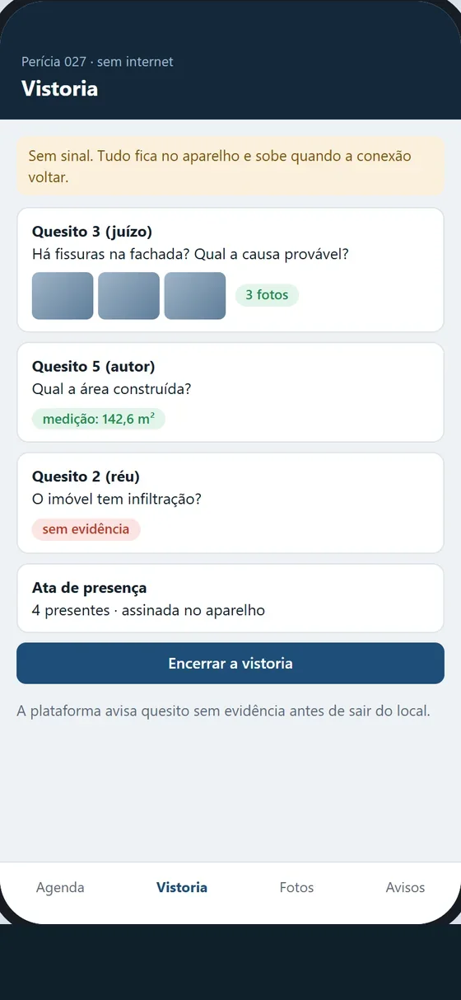
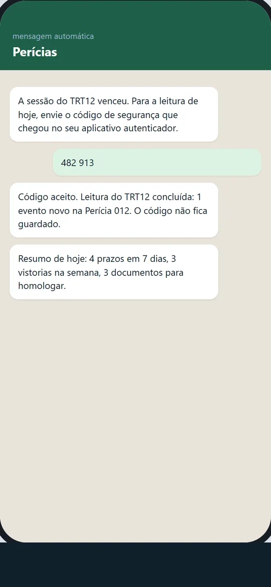

PortfólioSistemas e plataformas
Plataforma de perícias judiciais
Especificação de uma plataforma para peritos judiciais: leitura diária dos processos nos tribunais, controle de etapas e prazos, cálculo de honorários e preparação de documentos a partir de modelos.
- Cliente
- Perita judicial de engenharia civil
- Situação
- Especificação, versão 5.1
- Tribunais
- 57 levantados
- Documento
- 53 páginas
57tribunais levantados
14etapas do ciclo da perícia
11modelos de laudo
25tabelas no modelo de dados
Telas da plataforma
Tela reproduzida a partir da especificação. Dados fictícios.










No celular
Tela reproduzida a partir da especificação. Dados fictícios.




Ciclo da perícia
Entrada
E0 Cadastrouma vez; revisão a cada 6 meses
E1 Captura diáriaprocessos, eventos e prazos
Aceite
E2 Nomeaçãoaceite, proposta, declínio ou escusa
E3 Honorárioshomologação, impugnação, redução
Preparação
E4 Depósitoalvará de até 50%
E5 Agendamentopartes cientes 5 dias antes
E6 Preparaçãolista única de quesitos
Trabalho
E7 Vistoriaaplicativo sem internet
E8 Cálculoscódigo testado
E9 Laudoavisos D-15 a D-1
Fechamento
E10 Complementarponto a ponto
E11 Audiênciaquando houver
E12 Saldolevantamento e repasses
E13 Encerramentohoras reais x propostas
14 etapas. Cada uma tem sinal, ação da plataforma, documento pronto, conferências, prazo e efeito no financeiro.
Arquitetura
Regras de projeto
- Nada sem fonteTodo dado de um documento indica o processo, o evento e a página de onde veio.
- A IA não cria fatosFalta de informação vira pendência visível [FALTA: ...] e trava a liberação.
- Contas só por códigoValores, áreas e honorários saem de funções testadas, em centavos.
- Nenhum resto de outro casoO texto é comparado com o acervo antes de liberar o documento.
- O perito homologaNada é protocolado sem aprovação; o protocolo é feito pelo perito.
- Falha nunca silenciosaToda leitura termina como "lida e conferida" ou "não conferida", com aviso.
Funcionalidades
- CapturaLeitura incremental: só processos com novidade e só eventos novos.
- Código de segurançaPedido por mensagem; lembrete em 30 minutos e em 2 horas.
- Documentos11 modelos de petição e modelos de laudo por tipo de perícia.
- HonoráriosHora técnica do IBAPE de cada estado, com vigência e fonte.
- FinanceiroLivro imutável: esperado, homologado, depositado, liberado, recebido, conciliado.
- Avisos15 regras de aviso por evento, prazo e falha de captura.
Tecnologias
SupabasePlaywrightWhatsApp BusinessResendPythonReportLabMermaid